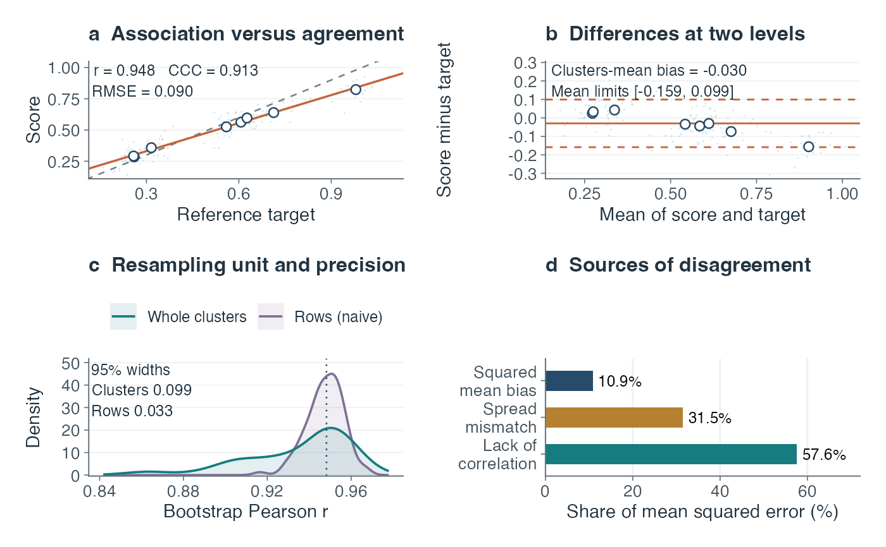

R/plot_rri_accuracy.R
plot_rri_accuracy.RdDraws the figure that accompanies rri_accuracy(). Each panel answers a
question a single correlation coefficient cannot: whether the score is
calibrated, whether disagreement grows with level, how much precision the
clustering costs, and which kind of error dominates.
An object of class rri_accuracy from rri_accuracy(), created
with n_boot > 0 so that the resampled statistics are available.
Character vector selecting panels, any of "calibration",
"agreement", "precision" and "error". Defaults to all four.
Axis labels for the score and the reference target.
Opacity of the individual observations. Lower it when trajectories overplot.
Logical, or NULL to decide automatically. Colours
observations by cluster. Set FALSE above roughly 20 clusters, where the
colouring stops being informative.
Base font size passed to theme_ems().
Number of columns in the assembled figure. Ignored when patchwork is unavailable.
Publication layout matching the paper (default), or the diagnostic layout with additional annotations.
Plural display name for the supplied independent units, e.g. "Plots". This label does not determine the statistical grouping.
If patchwork is installed, a single assembled patchwork
object. Otherwise a named list of ggplot objects, so nothing is lost
when the suggested package is absent.
Panel A, calibration. Score against target, with the 1:1 line dashed and the fitted line solid. Perfect agreement puts the points on the dashed line; a solid line flatter than it means the score compresses the target's range, and one displaced from it means a systematic bias. Open points are cluster means, the level at which these units are independent.
Panel B, agreement. A Bland-Altman plot: the difference between score and target against their mean, with the mean difference and the limits of agreement. A scatter that fans out, or that slopes, shows that disagreement depends on level, which a correlation coefficient cannot reveal. Because the lines summarise cluster means, they describe agreement of cluster means, not individual observations. They are descriptive normal-theory limits (mean difference plus or minus 1.96 SD), not confidence intervals; normality and level-independent dispersion must be assessed separately.
The paper style keeps detailed qualifications in this documentation and the figure caption: cluster-mean limits do not apply to individual rows, and bootstrap precision is conditional on supplied fitted pairs. Kernel densities use a Gaussian kernel with Scott bandwidth; degenerate draws are shown as points.
Panel C, precision. The bootstrap sampling distribution of \(r\) under row resampling and under supplied-cluster resampling, with both intervals drawn beneath. Widths are conditional on the supplied score-target pairs; the scoring pipeline is not refitted. The supplied clusters must correspond to independent sampling units. Row intervals are not necessarily narrower. The permutation null, when computed, sits behind them for reference.
Panel D, error. Mean squared error split into squared bias, variance mismatch and lack of correlation. The three sum to the mean squared error exactly, so the panel is a partition rather than an approximation.
Colours follow the package's chemistry-derived palette: teal for redox, rust for iron, violet for manganese, ochre for cautionary annotation.
rri_accuracy() for the statistics the figure displays.
set.seed(1)
k <- 8; m <- 20
unit <- rnorm(k, 0, 0.30)
target <- unlist(lapply(unit, function(u) u + 0.5 + rnorm(m, 0, 0.05)))
score <- 0.75 * target + 0.10 + rnorm(k * m, 0, 0.06)
traj <- rep(seq_len(k), each = m)
acc <- rri_accuracy(score, target, cluster = traj,
n_boot = 200, n_perm = 0, seed = 1)
p <- plot_rri_accuracy(acc)
# \donttest{
print(p)

# }